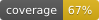

Welcome to SecondServe Backend Documentation¶

Overview¶
Welcome to the developer documentation for the SecondServe Backend. This documentation covers the Django backend architecture, API endpoints, data models, and utility modules used throughout the project.
The backend provides:
User authentication and management
API endpoints for client communication
Integration with external services
Database models and business logic
Contents¶
Documentation Structure:
Developer Notes¶
for running tests and generating badges from ./SecondServe/backend: .. code-block:: bash
# Run a coverage test
coverage run -m pytest
# Generate and print a coverage report
coverage xml -o coverage.xml
coverage report -m
# Generate test coverage badge
coverage-badge -o docs/source/_static/test_coverage.svg -f
For generating documentation and badges from ./SecondServe/backend: .. code-block:: bash
# Source docs
sphinx-apidoc -o docs/source . testing/* mongo_migrations/* docs/* –separate
# Generate HTML documentation
sphinx-build -b html docs/source docs/build/html
# Generate documentation coverage badge
docstr-coverage User SecondServe –skip-private –skip-magic –badge docs/source/_static/doc_coverage.svg